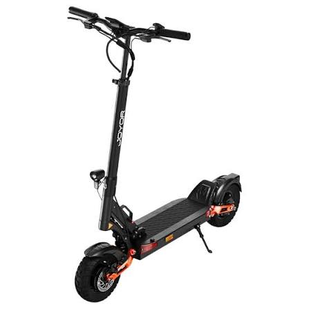

Elektromos rollerek



Elektromos rollerek
Az elektromos roller az elmúlt években egyre népszerűbb közlekedési eszközzé vált. Főleg városokban használják, ahol rövidebb távolságok megtételére gyors és kényelmes megoldást jelenthet. Az elektromos rollerek akkumulátorról működnek, ezért nincs szükség benzinre vagy más üzemanyagra. Sok modell összecsukható, így könnyen beférhet egy autóba, és tömegközlekedés mellett is praktikus lehet. A különböző típusok között vannak kisebb, könnyebb városi modellek és nagyobb teljesítményű rollerek is.
Hogyan működik egy elektromos roller?
Az elektromos roller működését egy akkumulátor és egy elektromotor biztosítja. Az akkumulátor tárolja az elektromos energiát, amelyet a motor használ fel a roller mozgatásához. A vezető a kormányon található kezelőszervekkel tudja szabályozni a sebességet. A modernebb modelleken gyakran található kijelző is, amely megmutatja például az aktuális sebességet, az akkumulátor töltöttségét és bizonyos esetekben a megtett távolságot is. A hatótáv és a teljesítmény függ a roller motorjától és akkumulátorától, de az időjárás, az út emelkedése és a vezető súlya is befolyásolhatja.
Előnyök és biztonság
Az elektromos roller egyik legnagyobb előnye, hogy könnyen használható a mindennapi közlekedésben. Rövidebb utak esetén időt takaríthatunk meg vele, és nem kell parkolóhelyet keresni egy nagyobb jármű számára. A roller karbantartása is általában egyszerű, azonban rendszeresen ellenőrizni kell a fékeket, a gumikat, a világítást és az akkumulátor állapotát. A biztonságos közlekedéshez fontos a környezet folyamatos figyelése és a megfelelő sebesség megválasztása. Bukósisak használata is ajánlott, különösen nagyobb sebességnél. Sötétben a megfelelő világítás és láthatóság szintén nagyon fontos.
Népszerű elektromos rollerek
A piacon rengeteg különböző elektromos roller található. Ismertebb gyártók közé tartozik például a Xiaomi, a Joyor és a KuKirin. A modellek között nagy különbségek lehetnek teljesítményben, hatótávban, végsebességben, méretben és árban. Egy városi használatra készült roller általában könnyebb és kisebb, míg az erősebb modellek nagyobb motorral, nagyobb akkumulátorral és robusztusabb vázzal rendelkezhetnek. Vásárlás előtt érdemes átgondolni, hogy milyen távolságokra szeretnénk használni a rollert, milyen útviszonyok között közlekedünk, és milyen felszereltségre van szükségünk.
Vásárlás előtti szempontok
Elektromos roller vásárlásakor több dolgot is érdemes figyelembe venni. Az egyik legfontosabb a hatótáv, hiszen nem mindegy, hogy milyen távolságot szeretnénk megtenni egyetlen feltöltéssel. A motor teljesítménye, a fékrendszer, a kerékméret és a rugózás szintén fontos szempontok. Nem érdemes kizárólag a végsebesség alapján választani, hiszen a megbízhatóság és a biztonság legalább ilyen fontos. Érdemes olyan modellt keresni, amely megfelel a mindennapi használati igényeinknek.
Új elektromos roller szabályok
2027-től január 1-jétől jelentős változások jöhetnek az elektromos rollerek közlekedési szabályaiban Magyarországon. Az új szabályozás célja a biztonságosabb közlekedés megteremtése és a balesetek számának csökkentése. A tervek szerint a rollereket teljesítményük és végsebességük alapján két kategóriába sorolnák. A nagyobb teljesítményű, 25 km/h-nál gyorsabb modellek vezetéséhez legalább AM kategóriás jogosítványra és 16 éves alsó korhatárra lenne szükség, valamint kötelező lenne a bukósisak használata. A kisebb teljesítményű rollereknél 14 év lenne az alsó korhatár, jogosítvány nélkül, de a 18 év alattiaknak fejvédőt kellene viselniük. A tervezet emellett sebességkorlátozásokat, alkoholtilalmat és az utasszállítás korlátozását is tartalmazza. Ezek a változások minden elektromos rollert használó számára fontosak lehetnek, ezért érdemes figyelemmel követni a végleges szabályok megjelenését.
| Márka | Xiaomi | Joyor | KuKirin |
|---|---|---|---|
| típus | Xiaomi 4 Lite 2 Gen | Joyor T10 | KuKirin G4 Max |
| Ár | 88.000 Ft-tól | 200.000 Ft-tól | 750.000 Ft-tól |
| Teljesítmény | 300 W | 2000 W | 3200 W |
| Hatótáv | 25 km | 75 km | 100 km |
| Végsebesség | 25 km/h | 60 km/h | 86 km/h |
| Tömeg | 16,2 kg | 29,6 kg | 64 kg |